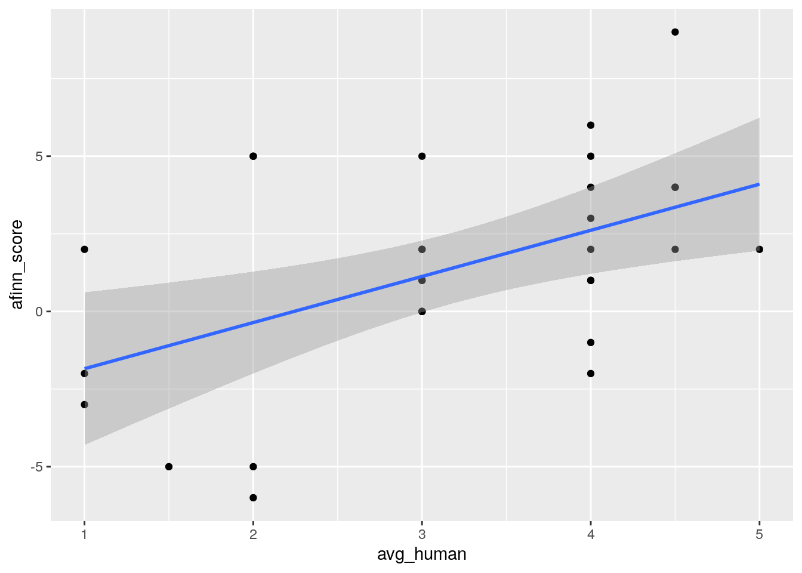

Chapter 3 The whole game
3.1 Analysing Trump’s tweets
We are going to use an example to illustrate the whole process of a typical automated content analysis scenario. In this example, we start with a simple research question or hypothesis. Let’s say I want to reproduce a very famous analysis of Donald Trump’s tweets. This example is very well-known in the data science world, probably because one of the authors of the tidytext package used this example to demonstrate the power of his package (and made him on the television). The research question is very simple: are tweets from Donald Trump’s twitter account tweeted using an iPhone more positive than those tweeted using an Android phone?
There are many elements to unpack from the above paragraph, but the above paragraph illustrates how data scientists and automated content analysis practitioners approach the problem differently. The utmost important element is: All automated content analysis project must have hypotheses to test or research questions to answer. If a project without hypotheses or research questions, it can hardly be called automated content analysis (see Chapter 2 for longer discussion). We also need to specify the context we are interested to analyze (Donald Trump and his Twitter). Later on, we need to think about the operationalization of variables (what is positive?), data collection plan and data analysis strategy.
In this book, however, we are not going to focus on 1) how to form hypotheses or research questions and 2) how to collect your (text) data. The reason for excluding the former is simple: It needs to be supported by communication theories. As a book that is intented as an research methods book, it is probably a bit too much to ask.1 For the latter, the exclusion of it is due to the fact that there are good papers and textbooks available. The book chapter by Liang and Zhu (2017) is probably a good start. Munzert et al. (2014) ’s Automated Data Collection with R is an in-depth manual.
At this point, you should probably go to preregister the hypotheses of this automated content analysis project. And then you should study the rtweet package by the wonderful Michael Kearney. Let’s suppose your data is now magically available. In the companion website of this book, you can find the data file with tweets from Donald Trump’s tweet account before he assumes duty as the president of the United States. The data looks like this:
require(tidyverse)## Loading required package: tidyverse## ── Attaching packages ─────────────────────────────────────── tidyverse 1.3.0 ──## ✔ ggplot2 3.2.1 ✔ purrr 0.3.3
## ✔ tibble 2.1.3 ✔ dplyr 0.8.3
## ✔ tidyr 1.0.0 ✔ stringr 1.4.0
## ✔ readr 1.3.1 ✔ forcats 0.4.0## ── Conflicts ────────────────────────────────────────── tidyverse_conflicts() ──
## ✖ dplyr::filter() masks stats::filter()
## ✖ dplyr::lag() masks stats::lag()require(quanteda)## Loading required package: quanteda## Package version: 1.9.9009## Parallel computing: 2 of 4 threads used.## See https://quanteda.io for tutorials and examples.##
## Attaching package: 'quanteda'## The following object is masked from 'package:utils':
##
## Viewrequire(rio)## Loading required package: rio##
## Attaching package: 'rio'## The following object is masked from 'package:quanteda':
##
## converttrump_tweets <- import('./data/trump.json') %>% as_tibble
trump_tweets## # A tibble: 17,936 x 7
## source text created_at retweet_count favorite_count is_retweet id_str
## <chr> <chr> <chr> <int> <int> <lgl> <chr>
## 1 Twitte… Heads of … Mon Dec 31… 20519 74566 FALSE 10798…
## 2 Twitte… ....Senat… Mon Dec 31… 17027 63013 FALSE 10798…
## 3 Twitte… It’s incr… Mon Dec 31… 29355 125931 FALSE 10797…
## 4 Twitte… I’m in th… Mon Dec 31… 30742 131151 FALSE 10797…
## 5 Twitte… I’m in th… Mon Dec 31… 1123 4217 FALSE 10797…
## 6 Twitte… I am the … Mon Dec 31… 25252 111582 FALSE 10797…
## 7 Twitte… I campaig… Mon Dec 31… 21960 90883 FALSE 10797…
## 8 Twitte… .....Exce… Mon Dec 31… 15081 72353 FALSE 10797…
## 9 Twitte… ...I camp… Mon Dec 31… 22000 100819 FALSE 10797…
## 10 Twitte… If anybod… Mon Dec 31… 17379 79095 FALSE 10797…
## # … with 17,926 more rowsUp to this point, you might notice this book uses tidyverse—or more precisely, dplyr—for data manipulation. Yes. If you are not familar with dplyr, it is a good idea for you to read the book R4DS (available online). The book you are reading now is not an introduction to dplyr. But as a refresher, let me show you all the dplyr you will need to deal with 80% of the situations. You probably only need to know 5 verbs and then combine them together. You may call these 6 verbs “Big Six” if you like.
3.2 An express summary of tidyverse
The first verb is select. It is used to select particular column(s) from a data frame. By the way, our data is a tibble, an arguably nicer version of data frame. Suppose we want to select only the columns source and text.
trump_tweets %>% select(source, text)## # A tibble: 17,936 x 2
## source text
## <chr> <chr>
## 1 Twitter for iPh… Heads of countries are calling wanting to know why Senator …
## 2 Twitter for iPh… ....Senator Schumer, more than a year longer than any other…
## 3 Twitter for iPh… It’s incredible how Democrats can all use their ridiculous …
## 4 Twitter for iPh… I’m in the Oval Office. Democrats, come back from vacation …
## 5 Twitter for iPh… I’m in the Oval Office. Democrats, come back from vacation …
## 6 Twitter for iPh… I am the only person in America who could say that, “I’m br…
## 7 Twitter for iPh… I campaigned on Border Security, which you cannot have with…
## 8 Twitter for iPh… .....Except the results are FAR BETTER than I ever said the…
## 9 Twitter for iPh… ...I campaigned on getting out of Syria and other places. N…
## 10 Twitter for iPh… If anybody but Donald Trump did what I did in Syria, which …
## # … with 17,926 more rowsThe second verb is filter. It is used to filter rows from a tibble based on certain criteria. Suppose you want to get all the rows which were tweeted from an Android phone.
trump_tweets %>% filter(str_detect(source, "Android")) %>% select(source, text)## # A tibble: 7,302 x 2
## source text
## <chr> <chr>
## 1 Twitter for And… "Watch @JudgeJeanine on @FoxNews tonight at 9:00 P.M."
## 2 Twitter for And… "ObamaCare will explode and we will all get together and pi…
## 3 Twitter for And… "LinkedIn Workforce Report: January and February were the s…
## 4 Twitter for And… "Don't let the FAKE NEWS tell you that there is big infight…
## 5 Twitter for And… "I am working on a new system where there will be competiti…
## 6 Twitter for And… "Don't worry, getting rid of state lines, which will promot…
## 7 Twitter for And… "For eight years Russia \"ran over\" President Obama, got s…
## 8 Twitter for And… "Our wonderful new Healthcare Bill is now out for review an…
## 9 Twitter for And… "122 vicious prisoners, released by the Obama Administratio…
## 10 Twitter for And… "Who was it that secretly said to Russian President, \"Tell…
## # … with 7,292 more rowsIn the above example, we combine two verbs (filter and select) using the pipe (%>%) operator. Some might disagree, but this method is more elegant. If you can tell a story using your dplyr code, it is probably a good code. For example, you can tell a story using the above code as such: We have our trump_tweets data, and then we filter all tweets where source contains “Android”, and then we select only the source and text columns.
So, the pipe operators in the above code are corresponding to all “and then” in the story.
From the above story, you might notice that the source column is recording from which device the tweet was tweeted, e.g. Android.
It is a good idea to see what are the other variants of “source” in our data. The next verb that we need to know is group_by.
trump_tweets %>% group_by(source)## # A tibble: 17,936 x 7
## # Groups: source [16]
## source text created_at retweet_count favorite_count is_retweet id_str
## <chr> <chr> <chr> <int> <int> <lgl> <chr>
## 1 Twitte… Heads of … Mon Dec 31… 20519 74566 FALSE 10798…
## 2 Twitte… ....Senat… Mon Dec 31… 17027 63013 FALSE 10798…
## 3 Twitte… It’s incr… Mon Dec 31… 29355 125931 FALSE 10797…
## 4 Twitte… I’m in th… Mon Dec 31… 30742 131151 FALSE 10797…
## 5 Twitte… I’m in th… Mon Dec 31… 1123 4217 FALSE 10797…
## 6 Twitte… I am the … Mon Dec 31… 25252 111582 FALSE 10797…
## 7 Twitte… I campaig… Mon Dec 31… 21960 90883 FALSE 10797…
## 8 Twitte… .....Exce… Mon Dec 31… 15081 72353 FALSE 10797…
## 9 Twitte… ...I camp… Mon Dec 31… 22000 100819 FALSE 10797…
## 10 Twitte… If anybod… Mon Dec 31… 17379 79095 FALSE 10797…
## # … with 17,926 more rowsIt seems that we have done nothing here. But you might notice the output says “Groups: source [16]”. group_by works the best when it is combined with summarise. dplyr is smart enough to accept both British and American spellings. So you can use summarize if you want.2 We use summarise to generate one-element summary of your data. For example, you want to get the total number of rows of this data.
trump_tweets %>% summarise(ntweets = n())## # A tibble: 1 x 1
## ntweets
## <int>
## 1 17936Using the above code, we can tell a story as such: We have our trump_tweets data, and then we want to summarise our data as ntweets whereas ntweets equals to n(), i.e. number of rows. Let’s try to use this verb with group_by:
trump_tweets %>% group_by(source) %>% summarise(ntweets = n())## # A tibble: 16 x 2
## source ntweets
## <chr> <int>
## 1 Facebook 2
## 2 Instagram 70
## 3 Media Studio 156
## 4 Mobile Web (M5) 2
## 5 Neatly For BlackBerry 10 5
## 6 Periscope 7
## 7 TweetDeck 2
## 8 Twitter Ads 97
## 9 Twitter for Android 7302
## 10 Twitter for BlackBerry 94
## 11 Twitter for iPad 59
## 12 Twitter for iPhone 7965
## 13 Twitter Media Studio 12
## 14 Twitter Mirror for iPad 1
## 15 Twitter QandA 10
## 16 Twitter Web Client 2152The story of the above code is: We have our trump_tweets … probably I can skip this part now, and then we group our data by source and then we summarise our data as ntweets whereas ntweets equals to n(), i.e. number of rows. So, what group_by does, is to split the data into groups by a certain column (or columns). The subsequent steps are then became group-based analysis. This principle is called “Split-Apply-Combine strategy” by Wickham (2011).
this group-based analysis shows that there are many variants! In this analysis, we keep only those tweets from iPhone and Android only. So, which verb we should use? I give you 10 seconds to think.
Well…
trump_tweets %>% filter(str_detect(source, "Android|iPhone"))## # A tibble: 15,267 x 7
## source text created_at retweet_count favorite_count is_retweet id_str
## <chr> <chr> <chr> <int> <int> <lgl> <chr>
## 1 Twitte… Heads of … Mon Dec 31… 20519 74566 FALSE 10798…
## 2 Twitte… ....Senat… Mon Dec 31… 17027 63013 FALSE 10798…
## 3 Twitte… It’s incr… Mon Dec 31… 29355 125931 FALSE 10797…
## 4 Twitte… I’m in th… Mon Dec 31… 30742 131151 FALSE 10797…
## 5 Twitte… I’m in th… Mon Dec 31… 1123 4217 FALSE 10797…
## 6 Twitte… I am the … Mon Dec 31… 25252 111582 FALSE 10797…
## 7 Twitte… I campaig… Mon Dec 31… 21960 90883 FALSE 10797…
## 8 Twitte… .....Exce… Mon Dec 31… 15081 72353 FALSE 10797…
## 9 Twitte… ...I camp… Mon Dec 31… 22000 100819 FALSE 10797…
## 10 Twitte… If anybod… Mon Dec 31… 17379 79095 FALSE 10797…
## # … with 15,257 more rowsmutate is for creating new columns.
trump_tweets %>% filter(str_detect(source, "Android|iPhone")) %>% mutate(android = str_detect(source, "Android")) %>% select(android, text)## # A tibble: 15,267 x 2
## android text
## <lgl> <chr>
## 1 FALSE Heads of countries are calling wanting to know why Senator Schumer i…
## 2 FALSE ....Senator Schumer, more than a year longer than any other Administ…
## 3 FALSE It’s incredible how Democrats can all use their ridiculous sound bit…
## 4 FALSE I’m in the Oval Office. Democrats, come back from vacation now and g…
## 5 FALSE I’m in the Oval Office. Democrats, come back from vacation now and g…
## 6 FALSE I am the only person in America who could say that, “I’m bringing ou…
## 7 FALSE I campaigned on Border Security, which you cannot have without a str…
## 8 FALSE .....Except the results are FAR BETTER than I ever said they were go…
## 9 FALSE ...I campaigned on getting out of Syria and other places. Now when I…
## 10 FALSE If anybody but Donald Trump did what I did in Syria, which was an IS…
## # … with 15,257 more rowsLast but not least, arrange is for sorting.
trump_tweets %>% filter(str_detect(source, "Android|iPhone")) %>% mutate(android = str_detect(source, "Android")) %>% select(android, text) %>% arrange(android)## # A tibble: 15,267 x 2
## android text
## <lgl> <chr>
## 1 FALSE Heads of countries are calling wanting to know why Senator Schumer i…
## 2 FALSE ....Senator Schumer, more than a year longer than any other Administ…
## 3 FALSE It’s incredible how Democrats can all use their ridiculous sound bit…
## 4 FALSE I’m in the Oval Office. Democrats, come back from vacation now and g…
## 5 FALSE I’m in the Oval Office. Democrats, come back from vacation now and g…
## 6 FALSE I am the only person in America who could say that, “I’m bringing ou…
## 7 FALSE I campaigned on Border Security, which you cannot have without a str…
## 8 FALSE .....Except the results are FAR BETTER than I ever said they were go…
## 9 FALSE ...I campaigned on getting out of Syria and other places. Now when I…
## 10 FALSE If anybody but Donald Trump did what I did in Syria, which was an IS…
## # … with 15,257 more rowsIt seems that it did nothing. We can set it to arrange by descending order. So that the tweets from Android are on top.
trump_tweets %>% filter(str_detect(source, "Android|iPhone")) %>% mutate(android = str_detect(source, "Android")) %>% select(android, text) %>% arrange(desc(android))## # A tibble: 15,267 x 2
## android text
## <lgl> <chr>
## 1 TRUE "Watch @JudgeJeanine on @FoxNews tonight at 9:00 P.M."
## 2 TRUE "ObamaCare will explode and we will all get together and piece toget…
## 3 TRUE "LinkedIn Workforce Report: January and February were the strongest …
## 4 TRUE "Don't let the FAKE NEWS tell you that there is big infighting in th…
## 5 TRUE "I am working on a new system where there will be competition in the…
## 6 TRUE "Don't worry, getting rid of state lines, which will promote competi…
## 7 TRUE "For eight years Russia \"ran over\" President Obama, got stronger a…
## 8 TRUE "Our wonderful new Healthcare Bill is now out for review and negotia…
## 9 TRUE "122 vicious prisoners, released by the Obama Administration from Gi…
## 10 TRUE "Who was it that secretly said to Russian President, \"Tell Vladimir…
## # … with 15,257 more rowsOh, yea! We have our data! So we should do our sentiment analysis now, right?
NO! Nein! Non! いいえ! 唔係!
3.3 Creating ground truth data
This is another split-path between data scientists and automated content analysts.
If you know nothing about automated content analysis, the traditional way of dealing with our data is to manually code all tweets. The word “code” as a verb can create confusion here, because it can also mean “programming.”3 In this programming-heavy book, I am going to use another verb for “coding” (in the social sciences’ sense): data categorizing. I believe this term can still capture most, but not all, nuances of the verb “coding” (in the social sciences’ sense). For the verb “coding” in the programming’s sense, I am going to use, as you can guess, programming.
Sorry for the detour. Traditionally, social scientists approach this problem by catagorizing the unstructured data into a form suitable for computer analysis. A tweet is a bunch of characters that a (naive) computer cannot extract meanings—or semantics—out of it. However, whether or not a tweet is positive is a semantic problem. Homo sapiens have a brain and some of us have the knowledge in English to determine the semantics of a piece of text. We need to tell the computer, what semantically is expressed in a tweet. This procedure is called data categorization.
In an academic setting, it usually means the principal investigator of this project (i.e. you) would assemble a team of student assistants to categorize all tweets by reading them one by one and then asserting every one of them if they are positive or not. In order to ensure interrater reliability, we usually assign at least two student assistants to read one tweet.
This procedure of data categorization is notoriously expensive. In Germany, for instance, one needs to pay a student assistant €15.8 per hour in 2020. Let’s assume a student assistant can read 4 tweets per minute. In order to read every single tweets (n = 15,267) by two students, it takes (15,267 x 2) / 4 = 7,633.5 man-minutes or 127.2 man-hours. Therefore, the principal investigator (i.e you) needs to pay €2009.76 just for the data categorization. It is not a handsome amount of money: You can buy 4464 packs of instant ramen that you can eat for about a year. But remember, now you are not doing this for your PhD thesis. It is just an exercise of a stupid book. If you are willing to pay this: “Danke schön!”, your student assistants say. If you are not willing to pay this, what should you do?
Instead of asking your student assistants to categorize all data, we can use a computer to categorize the data. But as I said previously, a (naive) computer cannot extract semantics from a piece of text. However, it can extract an approximated version of semantics —or a surrogate measure— from text content. So, what is a surrogate surrogate? The dictionary by Upton and Cook (2014) gives this definition: “A variable that can be measured (or is easy to measure) that is used in place of one that cannot be measured (or is difficult to measure)”. A very similar term is “proxy measure” but there is one crucial difference: Proxy measure is a variable that is used in place of one that cannot be measure. Period. There is no “or” after it. As indicated previously, we can measure the negativity or a tweet by manual data categorization, it is just “diffuclt to measure” due to the cost. Thus, we use a surrogate measure instead.
A good surrogate measure should have a strong correlation with the original variable. For example, it is difficult to assess the wealth of a family. It is just difficult, not impossible. As a surrogate measure, we can use the value of the family’s house as an approximation. We know that in normal circumstances, the two variables (the wealth of the family and the value of the family’s house) should be correlated. But for this correlation to be valid, there are many assumptions: people can actually afford a house, rich people buy expensive houses and the housing market is not regulated, just to name three. A surrogate measure is good only when the domain of the measurement can hold the assumptions that maintain the correlation between the surrogate measure and the actual measure. We will come back to this point in Chapter 4.
We —as a practitioner of automated content analysis— cannot blindly accept a surrogate measure is always good. It is related to the fact that we are doing automated content analysis, which is actually a content analysis. In the next chapter, we will come back to the validity requirement of any content analysis, automated or not.
Up to this point, we have a dilemma: Manual data categorization is too expensive but automated content analysis is just a surrogate measure. What should we do?
A simple solution is to test whether the domain of our measurement fits the original assumptions. Therefore, we need to test the correlation between the approximated semantics extracted by the computer and the semantics extracted by humans. As said before, a good surrogate measure should have a strong correlation with the original measurement. For this, we do not need to manually categorize a lot of tweets. A randomly selected handful of tweets will do. We have a name for these manually categorized data for testing the validity of a tool: ground truth data.
We will talk more on how to create ground truth data in Chapter 4. As an excercise of creating ground truth data, let’s say we want to create a set of ground truth data with a random sample of 30 tweets. It can be done easily with:
set.seed(42)
trump_tweets %>% sample_n(30) %>% select(text) %>% rio::export('data/trump_tweet30.rds')And then, I ask my team of two student assistants to manually categorize these 30 tweets. This task should take (30 x 2) / 4 = 15 man-minutes. The cost of it (€3.95) is only a few packs of instant ramen. Or, if you are middle class and don’t mind damaging the environment, it is the cost of a “coffee to go”.
The coding procedure is simple, or even simplified. The two student assistants categorize the 30 tweets into a binary category of whether or not the tweet is negative with a 5-point likert scale, i.e.
Cruz came to Mississippi, there was nobody there, he left the state. I had a rally in Madison, MS with 10,000! Thank you!
How negative is the above tweet? 1 - Very negative, 2 - Negative, 3 - Neutral, 4 - Positive, 5 - Very positive
And the data looks like this:
trump_tweet30_coded <- rio::import("data/trump_tweet30_coded.rds")
trump_tweet30_coded## # A tibble: 30 x 3
## text coder1 coder2
## <chr> <dbl> <dbl>
## 1 "Cruz came to Mississippi, there was nobody there, he left the… 4 5
## 2 "RT @WhiteHouse: .@realDonaldTrump and @FLOTUS visited the Fli… 3 3
## 3 "#TBT Trump and Gekko- http://t.co/JhEKn4IoJf" 3 3
## 4 "\"@Trumptbird: Dear I'm starting to believe that you're actu… 4 4
## 5 "Love seeing union & non-union members alike are defecting… 4 4
## 6 "\"@RW84JR: @realDonaldTrump Glad U R Man Enough 2 Speak the T… 4 4
## 7 "\"@Bobzilla305: @realDonaldTrump @krauthammer is a progressiv… 1 1
## 8 "\"@ThisIsBillG: West Coast, get ready! @realDonaldTrump truly… 5 4
## 9 "Join @mike_pence at the University of Northwestern Ohio- toni… 3 3
## 10 "Ralph Northam will allow crime to be rampant in Virginia. He’… 2 2
## # … with 20 more rowsWe consider the two columns of coder1 and coder2 our ground truth data. In the next section, we will use these ground truth data to validate the automatically extracted semantics from Trump’s tweets.
3.4 Automated sentiment analysis: AFINN
Now, with the ground truth data, we can finally do the so called ‘sentiment analysis’. Before, we really do it, I would like to remind you for one last time that the semantics extracted by these method are an approximated version of the true semantics. Thus, it is a surrogate at best.
The simpliest method for doing a sentiment analysis is using a dictionary-based method. These methods are explained in Chapter 6. In short, these methods rely on two simple assumptions to calculate the overall sentiment of a piece of text. A dictionary is a collection of words. For example, a negative dictionary might have words that contain negative meanings, for example, f… fool, f… foolish, or f… faulty. A positive dictionary might have words such as good, nice, wonderful. A piece of text with a lot of words in the negative dictionary should have a higher negativity.
There are many of these dictionaries available. These readily available dictionaries are called off-the-shelf dictionaries. In Chapter 6, we will discuss the problems of using them. But one way to avoid those problems is to first create ground truth data and validate these dictionaries before use. But another way to avod those problems is a to use a theory-informed dictionary. We will also talk about how to choose a dictionary in Chapter 6. Here, we are going to use the AFINN dictionary Nielsen (2011). It is a dictionary designed for measuring sentiment of social media data.
afinn <- readRDS("data/afinn.RDS")
dfm(trump_tweet30_coded$text, remove_punct = TRUE) %>% dfm_lookup(afinn) %>% quanteda::convert(to = "data.frame") %>% mutate(score = neg5 * -5 + neg4 * -4 + neg3 * -3 + neg2 * -2 + neg1 * -1 + zero * 0 + pos1 * 1 + pos2 * 2 + pos3 * 3 + pos4 * 4 + pos5 * 5) %>% pull(score) -> afinn_score
afinn_score## [1] 2 2 0 6 4 1 -3 4 1 -6 2 0 5 -1 9 1 1 5 5 -5 2 -2 2 2 3
## [26] 0 5 -2 4 -5cor.test(trump_tweet30_coded$coder1, afinn_score)##
## Pearson's product-moment correlation
##
## data: trump_tweet30_coded$coder1 and afinn_score
## t = 3.4129, df = 28, p-value = 0.001975
## alternative hypothesis: true correlation is not equal to 0
## 95 percent confidence interval:
## 0.2258582 0.7548831
## sample estimates:
## cor
## 0.5420231cor.test(trump_tweet30_coded$coder2, afinn_score)##
## Pearson's product-moment correlation
##
## data: trump_tweet30_coded$coder2 and afinn_score
## t = 2.5728, df = 28, p-value = 0.01568
## alternative hypothesis: true correlation is not equal to 0
## 95 percent confidence interval:
## 0.09140221 0.68899948
## sample estimates:
## cor
## 0.4372723trump_tweet30_coded %>% mutate(afinn_score = afinn_score) %>% mutate(avg_human = (coder1 + coder2) / 2) %>% ggplot(aes(x = avg_human, y = afinn_score)) + geom_point() + geom_smooth(method = "lm")
References
Liang, Hai, and Jonathan JH Zhu. 2017. “Big Data, Collection of (Social Media, Harvesting).” The International Encyclopedia of Communication Research Methods. Wiley Online Library, 1–18. doi:10.1002/9781118901731.iecrm0015.
Munzert, Simon, Christian Rubba, Peter Meißner, and Dominic Nyhuis. 2014. Automated Data Collection with R: A Practical Guide to Web Scraping and Text Mining. John Wiley & Sons.
Nielsen, Finn Årup. 2011. “A New Anew: Evaluation of a Word List for Sentiment Analysis in Microblogs.” arXiv Preprint arXiv:1103.2903.
Upton, Graham, and Ian Cook. 2014. A Dictionary of Statistics 3e. Oxford university press.
Wickham, Hadley. 2011. “The Split-Apply-Combine Strategy for Data Analysis.” Journal of Statistical Software 40 (1). Citeseer: 1–29. doi:10.18637/jss.v040.i01.
The author of this book admits that he is not an expert in communication theories.↩
This code should be replaced with count(), but for the sake of education, let’s bear with me with a combination of group_by and summarise↩
Probably social scientists used the word “code” as a verb earlier than programmers. This is a problem of English. German has two different verbs: kodieren and coden.↩